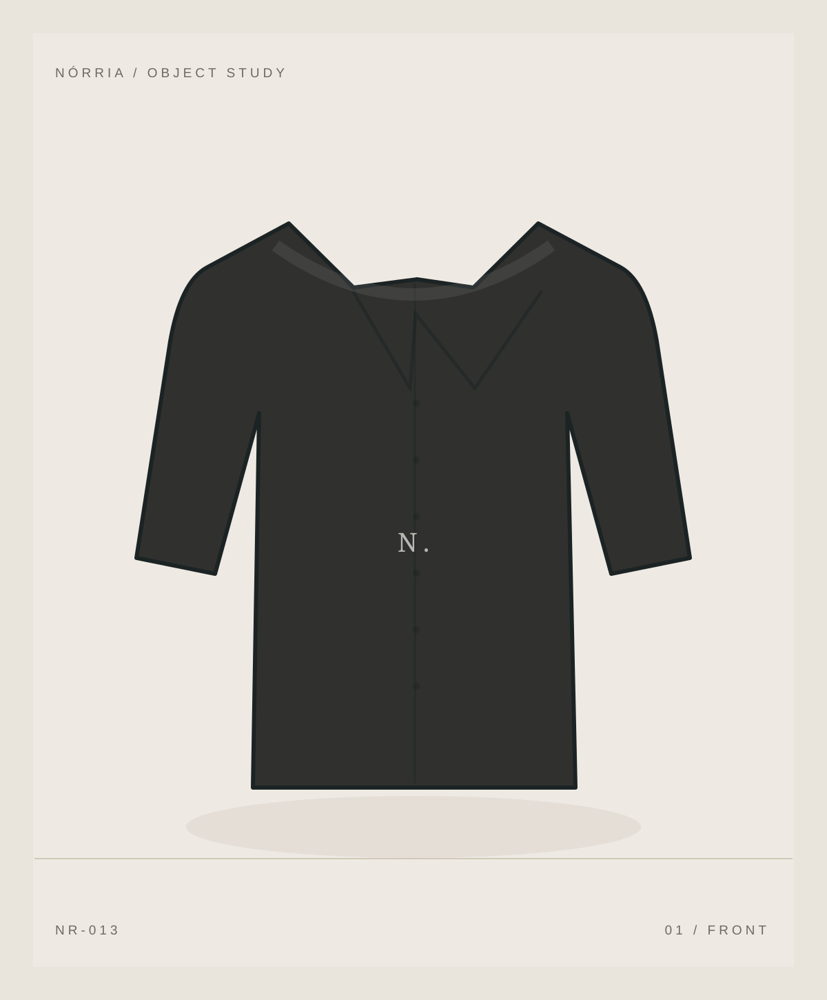

Uma coleção
para explorar.
Explore 24 peças ilustradas, encontre seu tamanho e cor, salve favoritos e experimente uma jornada de compra sem pagamentos reais.
Explorar coleção

Peças, categorias e escolhas em um só lugar.
24 peças conceituais, apresentadas com clareza: variantes, tamanhos, informação e uma jornada de compra demonstrativa.
Ver todas as peças
Explore as 24 peças da coleção.
Ilustrações vetoriais conceituais; não representam produtos fabricados ou fotografados.

Uma nova leitura
do essencial.
Pesquisa visual sobre materiais, ritmo e volumes. Uma direção de arte conceitual — as peças ilustradas do catálogo não são produtos fabricados.
Explorar lookbookNão é sobre ter mais. É sobre fazer escolhas.
NÓRRIA imagina uma marca que propõe uma relação mais consciente com o guarda-roupa. O design digital segue o mesmo princípio: navegação limpa, informação útil e decisões sem pressão.
Uma identidade presente em cada detalhe.
Explore nossa história fictícia e como a identidade visual se traduz em navegação, catálogo e escolhas de produto.